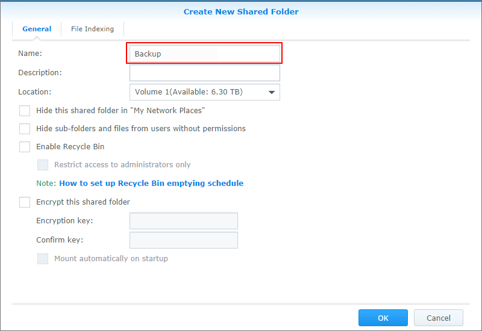
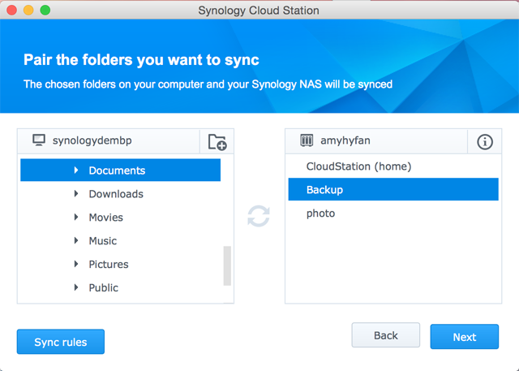

Oversikt
Cloud Station er ikke bare sofistikert synkroniseringsprogramvare på tvers av plattformer. Brukere kan også bruke den som en smartere metode for å sikkerhetskopiere datamaskinen sin. Dette er noen av fordelene ved å bruke Cloud Station som din følgesvenn for sikkerhetskopiering. Først av alt, gir kopiering i sanntid deg en bedre RPO, en kortere periode der data kan gå tapt (ugjenopprettelig) fra datamaskinen din pga. en kritisk hendelse. Ikke bare er det umiddelbart, men den vil også bidra til betraktelig sparing av båndbredde, sammenlignet med tradisjonell sikkerhetskopiering som bruker store mengder av båndbredden til enhver tid. Du kan enkelt filtrere ut filer i en mappe som du ikke vil sikkerhetskopiere ved å angi filstørrelse eller filtype i PC-klienten din. Cloud Station kan også beholde opptil 32 historikkversjoner av en enkeltfil som du kan gjenopprette til en PC-klient fra serversiden (NAS).
1. Sett opp Cloud Station på eCore Server
- Logg inn på DSM med en konto som tilhører administrator.
- Kjør Cloud Station.
- Hvis du ikke har aktivert brukerhjemfunksjonen, vil du bli bedt om å gjøre det. Klikk på OK.
- Du vil bli videresendt til siden for brukerinnstillinger. Aktiver brukerhjem og klikk på Bruk.
- Nå går du tilbake til Cloud Station hvor du vil bli bedt om å aktivere den. Klikk Ja.
- Gå til Rettigheter og spesifiser brukerne du ønsker skal kunne bruke Cloud Station. Klikk på Lagre.
- Sett opp en delt mappe på din eCore Server for sikkerhetskopiformål. For å gjøre dette, går du til Kontrollpanel > Delt mappe og klikk på Opprett.
- Gi navn til mappen og oppgi nødvendig informasjon. Klikk på OK. For eksempel, gir vi mappen navnet Backup. 
- Under fanen Tillatelser spesifiserer du brukerne du ønsker skal ha tilgang til mappen. For eksempel, gir vi admin skrive/lese-tillatelser for mappen. Klikk på OK.
- Gå til Cloud Station > Innstillinger > Deling og velg mappen Sikkerhetskopiering og klikk på Aktiver.


2. Sett opp Cloud Station på Windows PC
Følg trinnene for å sette opp Cloud Station på Mac eller PC
2,1 For PC
- Gå til Cloud Station > Oversikt og klikk på knappen Last ned.
- Klikk på knappen for å laste ned Cloud Station for Windows PC. (Du kan også laste ned Cloud Station fra Synology Nedlastingssenter.)
- Kjør installasjonsprogrammet på datamaskinen din og følg instruksjonene for å installere Cloud Station.
- Når installasjonen er fullført, kjører du Cloud Station på datamaskinen din. Klikk på Start nå.
- Angi adressen til den eCore Server som kjører Cloud Station (eller QuickConnect ID), brukernavn og passord. (Du kan også klikke på søkeikonet til høyre for å la Cloud Station automatisk søke etter andre eCore Server-enheter på ditt LAN.) Klikk på Neste.
- Velg hvordan du vil sette opp oppgaven (her velger vi Avansert oppsett siden vi setter opp en mappe spesifikt for sikkerhetskopiering). Klikk på Neste.
- Velg en mappe på datamaskinen din som skal holdes synkronisert med Backup-mappen du opprettet tidligere på din eCore Server. Klikk på Neste.
- Klikk på Ferdig for å fullføre oppsettet.


Slik oppretter du en ny oppgave:
- Gå til Cloud Station > Innstillinger og aktiver en delt mappe for denne nye oppgaven. Mitt eksempel er photo. Kontroller at du har lese/skrive-rettigheter for photo.
- Tilbake i Cloud Station på datamaskinen din klikker du på Opprett.
- Velg en eCore Server for din nye oppgave. Her velger vi Tilkoblet eCore Server siden vi oppretter en ny oppgave for den samme eCore Server. Klikk på Neste.
- Velg Avansert oppsett og følg resten av veiviseren for å fortsette oppsettet.


2,2 For Mac
- Gå til Cloud Station > Oversikt og klikk på knappen Last ned.
- Klikk på knappen for å laste ned Cloud Station for Mac. (Du kan også laste ned Cloud Station fra Synology Nedlastingssenter.)
- Kjør installasjonsprogrammet på datamaskinen din og følg instruksjonene for å installere Cloud Station.
- Når installasjonen er fullført, kjører du Cloud Station på datamaskinen din. Klikk på Start nå.
- Angi adressen til den eCore Server som kjører Cloud Station (eller QuickConnect ID), brukernavn og passord. (Du kan også klikke på søkeikonet til høyre for å la Cloud Station automatisk søke etter andre eCore Server-enheter på ditt LAN.) Klikk på Neste.
- Velg hvordan du vil sette opp oppgaven (her velger vi Avansert oppsett siden vi setter opp en mappe spesifikt for sikkerhetskopiering). Klikk på Neste.
- Velg en mappe på datamaskinen din som skal holdes synkronisert med Backup-mappen du opprettet tidligere på din eCore Server. Klikk på Neste. 
- Klikk på Ferdig for å fullføre oppsettet.


Slik oppretter du en ny oppgave:
- Gå til Cloud Station > Innstillinger og aktiver en delt mappe for denne nye oppgaven. Mitt eksempel er photo. Kontroller at du har lese/skrive-rettigheter for photo.
- Tilbake i Cloud Station på datamaskinen din klikker du på Opprett.
- Velg en eCore Server for din nye oppgave. Her velger vi Tilkoblet eCore Server siden vi oppretter en ny oppgave for den samme eCore Server. Klikk på Neste.
- Velg Avansert oppsett og følg resten av veiviseren for å fortsette oppsettet.


3. Hent data fra Cloud Station
Hvis du fjerner eller overskriver en fil ved et uhell, lar Cloud Station deg enkelt gjenopprette den.
4.1 Slik laster du ned en tidligere versjon av en synkronisert fil på PC
- Klikk på Cloud Station-ikonet i systemstatusfeltet og klikk på mappeikonet.
- Høyreklikk på den valgte filen og velg Synology Cloud Station > Bla gjennom tidligere versjoner.
- Finn versjonen du ønsker å laste ned og klikk på nedlastingsikonet.
- Angi filnavnet og velg hvor du vil lagre filen.


4.1 Slik laster du ned en tidligere versjon av en synkronisert fil på Mac
- Klikk på Cloud Station-ikonet i systemstatusfeltet og klikk på mappeikonet.
- Høyreklikk på den valgte filen og velg Synology Cloud Station > Bla gjennom tidligere versjoner.
- Finn versjonen du ønsker å laste ned og klikk på nedlastingsikonet.
- Angi filnavnet og velg hvor du vil lagre filen.


4.3 Slik laster du ned eller gjenoppretter en tidligere versjon av en synkronisert fil fra Cloud Station
- Gå til Cloud Station> Versjonshistorikk og velg Backup-mappen du opprettet tidligere.
- Velg filen du vil hente og klikk på Handling > Bla gjennom tidligere versjoner.
- Velg filversjonen du vil laste ned og klikk på Last ned. Eller hvis du er sikker på at du vil gjenopprette den valgte versjonen, klikker du på Gjenopprett for å overskrive den gjeldende versjonen.


4. Viktige meldinger
- Du bør alltid beholde historikkversjoner i tilfelle en fil blir fjernet eller overskrevet ved et uhell.
- I Globale innstillinger kan du konfigurere om en fil skal hentes på nytt fra din NAS eller slettes på din NAS når du sletter en fil på din PC.
5. Ytterligere beskyttelse av dine data
For flere måter du kan beskytte og sikkerhetskopiere dine data, klikker du her for å se veiledninger for andre sikkerhetskopitjenester som DSM tilbyr.